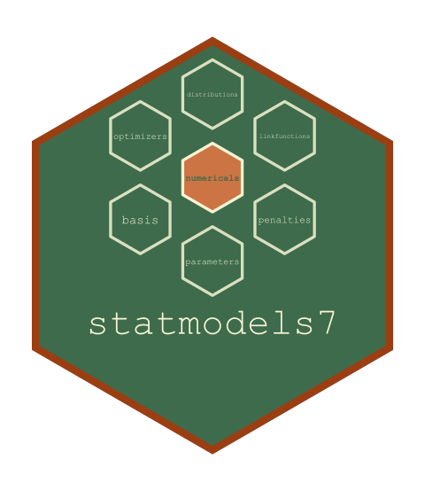

A Fit Searched over the Versions of a Term
Source:R/variants.R
statmod_variant_search.RdFits the model once with each term that carries a choice replaced by its
pilot (modelterms7::term_pilot()), then, one such term at a time, once
for each of its versions (modelterms7::term_variants()), and returns the
fit whose score (variant_score()) is the smallest.
Format
statmod_variants is an environment holding, during a search,
whether the search is running (active) and which terms replace which
in the formula (override, a list by parameter of terms keyed by the
call as written, which statmod_terms() reads); it is empty outside a
search.
Arguments
- cl
The call of
statmod().- caller
The environment in which it was made.
- auto
The terms that carry a choice, as
variant_terms()returns them.
Value
A StatmodFit.
Details
Every fit is the call of statmod() as written, evaluated where it was
made, with the replacement recorded in statmod_variants; the search is
not entered again from inside. Where several terms carry a choice, each is
settled in turn with the earlier ones at their chosen version and the later
ones at their pilot. A term whose choice has several parts
(modelterms7::term_variant_stages()) is searched one part at a time,
each stage starting from the version chosen at the stage before. The
versions tried, with their scores and the warnings that each fit raised,
are in
fit@history$variants, and the fit's elapsed covers the whole search.